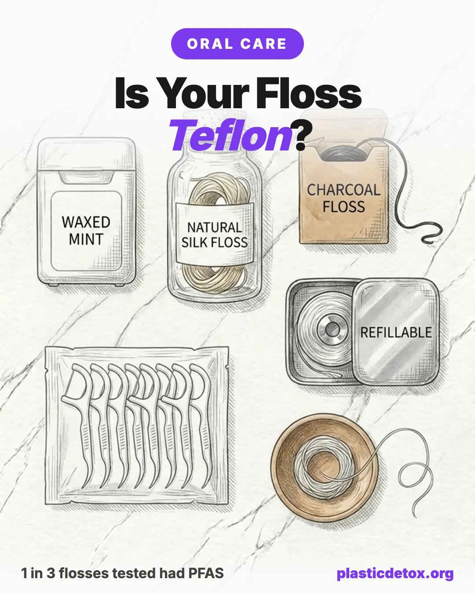

Best PFAS Free Dental Floss: Why Most Floss Is Coated in Teflon (2026)

The reason your floss glides so smoothly between tight teeth is usually a coating of PTFE, the same slippery plastic as Teflon. It is a member of the PFAS family, the forever chemicals, and it does not stay on the string.
The 30 Second Summary
- That "glide" is often Teflon. Slick flosses are frequently coated in PTFE, a PFAS polymer, so the string slides more easily against your gums.
- It shows up in your blood. A 2019 study tied Oral-B Glide use to higher PFAS levels, and 2024 lab testing found Glide at 248,900 ppm organic fluorine, a record high for a consumer product.
- Silk floss is the clean gold standard. Dental Lace is 100 percent silk with plant wax, PFAS and PTFE free, and biodegradable.
- Want vegan? Cocofloss tests PFAS free, though its strand is polyester rather than silk.
- Read the label: "glide," "comfort," and "smooth" are red flags. "Silk," "PFAS free," and "PTFE free" are green flags.
1. The Research, in Plain English
Two pieces of research turned floss from a boring health habit into a headline.
2. Why Floss Has Teflon in It
PFAS is not a contaminant here. It is added on purpose. PTFE is the slipperiest material in the world, so a thin coat lets the string shoot between tight contacts without shredding. The problem is that flossing is abrasive by design, and the coating rubs off against your gums and into the tissue.
PFAS are called forever chemicals because they do not break down in the body or the environment. They have been linked to hormone disruption, immune effects, and certain cancers. A floss you use daily, right against soft gum tissue, is a route worth closing.
3. How to Spot PFAS Floss
No label lists PFAS outright. But the marketing words give it away.
4. The Best PFAS Free Flosses
Each pick below is confirmed PFAS free in independent testing, and we found no recalls for any of them. The silk options are also biodegradable. Pick by silk or vegan.

Dental Lace Silk Floss
100 percent mulberry silk coated in candelilla plant wax. PFAS and PTFE free, and the strand is fully biodegradable. Refillable glass jar with recyclable spools. On the Center for Environmental Health PFAS free list.
View →
Dr. Tung's Smart Floss
Tested PFAS free and widely stocked. A stretchy natural floss that expands to fill wider gaps and clean more surface. Cardamom flavor from plant extracts, no artificial coating.
View →
Cocofloss
Tests PFAS free and vegan. A woven texture infused with coconut oil that scrubs like a loofah for teeth. Note the strand is polyester, so it is plastic free of PFAS but not biodegradable like silk.
View →| Floss | Strand | Coating | PFAS Free? |
|---|---|---|---|
| Dental Lace | Silk (biodegradable) | Candelilla wax | Yes |
| Dr. Tung's Smart Floss | Stretch fiber | Plant wax | Yes |
| Cocofloss | Polyester (vegan) | Coconut oil, wax | Yes |
| Oral-B Glide (classic) | Nylon | PTFE / Teflon | No |
5. Silk vs. Vegan: The Trade Off
Getting PFAS out is the main win. After that, there is one honest fork in the road.
- Silk floss is naturally PFAS free and fully biodegradable, so it closes both the forever chemical and the plastic problem at once. The catch is that it is an animal product, so it is not vegan.
- Vegan floss avoids silk, but the strand is almost always nylon or polyester, which is plastic that does not break down. It can still be PFAS free, which is the priority, but it is not zero waste.
6. The Greenwashing Traps to Watch
The floss aisle is full of earthy packaging that does not survive a second look. Three claims fool the most people.
- "Bamboo" floss is the biggest one. Bamboo fiber is too short to spin into a floss strand, so it is blended with nylon or polyester and dusted with charcoal. The refillable glass jar is lovely, but the string inside is usually plastic that will not biodegrade, no matter what the box says.
- "Biodegradable" floss picks stretch the truth. The little handle might be a plant bioplastic, but the thread is nylon, and bioplastics need an industrial composter to break down, not your bin or the ocean.
- "Natural" and "eco friendly" are not regulated. If the packaging never names the strand material, treat it as nylon until proven otherwise.
The simplest tell: if a floss brags about being biodegradable but never says silk, it is almost always nylon underneath. For more of these traps across the store, see our roundup of clean products that are not so clean.
7. Beyond Floss: The Rest of Your Mouth
Floss is one piece of a low tox mouth. The quick wins next to it:
- Toothpaste: skip the ones with plastic microbeads, artificial dyes, and questionable whiteners. See our cleanest toothpaste guide.
- Toothbrush: most "bamboo" brushes still have nylon bristles. Here is what that means and what to buy.
- Water: PFAS is in tap water too. A good filter closes the biggest source. See how to filter PFAS and microplastics from water.
8. Frequently Asked Questions
Many do. The slick coating that helps floss glide between teeth is often PTFE, the same polymer as Teflon and a member of the PFAS family. A 2024 lab study of 39 flosses found PFAS in roughly a third of them, and Oral-B Glide tested at 248,900 ppm organic fluorine, the highest the lab had ever recorded in a consumer product.
A 2019 Silent Spring Institute study found that women who used Oral-B Glide had higher blood levels of a PFAS called PFHxS. Glide was historically made with PTFE. Oral-B has since said it no longer formulates Glide with PTFE, but has not publicly detailed the replacement material or exactly when all inventory changed over. If you want certainty, choose a floss that is explicitly tested PFAS free.
Silk floss coated with plant wax is the cleanest choice because it is both PFAS free and biodegradable. Dental Lace is 100 percent silk with candelilla wax in a refillable glass jar. Dr. Tung's is widely available and PFAS free. Cocofloss is a good vegan option that tests PFAS free, though its strand is polyester rather than silk.
There is no PFAS line on the label, so read the clues. Words like glide, comfort, smooth, and slick usually signal a PTFE coating. A floss that names PTFE, or feels unusually slippery, is a red flag. Green flags are the words silk, PFAS free, or PTFE free, and a plant based wax such as candelilla or beeswax.
For most people yes. Silk floss is naturally PFAS free and fully biodegradable, so it avoids both the forever chemicals and the plastic. Nylon and polyester flosses can also be PFAS free, but the strand itself is plastic and does not break down. If you prefer a vegan option, look for a plant based or PFAS free labeled floss and accept that the strand is synthetic.
Related Articles
- The Cleanest Non Toxic Toothpaste
What to look for and what to skip for the rest of your mouth. - Bamboo Toothbrushes Still Have Plastic Bristles
The greenwashing in the toothbrush aisle, and the real plastic free options. - How to Filter PFAS and Microplastics from Water
PFAS is in tap water too. Which filters actually remove it. - Best Plastic Free Chewing Gum
Most gum is plastic too. The chicle based swaps to chew instead.